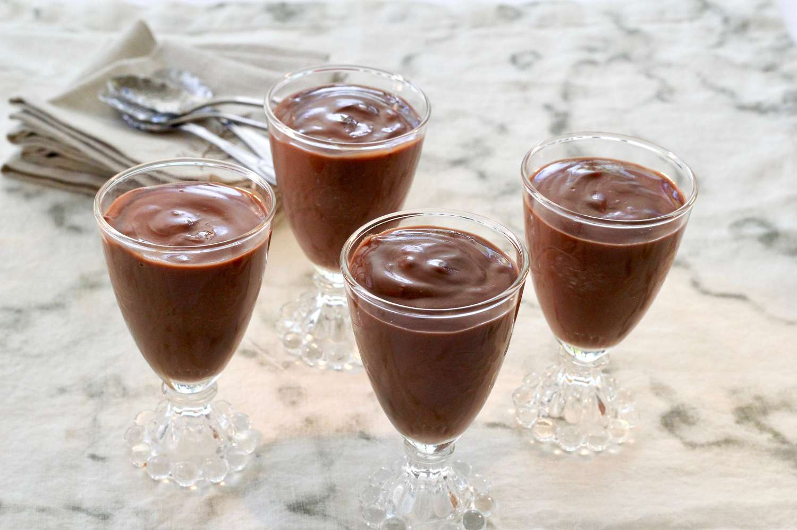

Pudding recipe

A lot of chocolate pudding recipes only
call for cornstarch as the thickener,
but I like to use both cornstarch and
egg yolks, bringing in a little bit of
that French custard feel to the pudding.
I find that using both gives the pudding
the best silky, thick, luscious texture
that we all want when we’re eating
chocolate pudding!Pour everything back
into the saucepan and cook over high heat
until the pudding thickens into a luscious,
silky consistency. Then remove the
pudding from the heat and stir in chocolate
or vanilla extract for extra flavor.
Ingredients
- 2 Large Egg Yolks
- 2 tbsp. Cornstarch
- 2 c. Whole Milk, Divided
- 1/2 c. Sugar
- 1/4 c. Unsweetened Cocoa Powder
- 1/4 tsp. Salt
- 2 tsp. Chocolate Extract (or Vanilla Extract)
Steps
- To start, place two egg yolks into a bowl
- Whisk the egg yolks vigorously for about
60 seconds, until the yolks lighten in
color and thicken to a frothy, foamy texture.
- Add cornstarch and some milk to the egg yolks.
- Whisk until fully combined, then set aside.
- In a small saucepan, combine sugar, cocoa powder, salt, and milk.
- Heat this mixture to a scalding temperature, then whisk it into the egg cornstarch mixture.
- Pour everything back into the saucepan and cook over high heat until the pudding thickens into a luscious, silky consistency. Then remove the pudding from the heat and stir in chocolate or vanilla extract for extra flavor.
- Pour the chocolate pudding into a big bowl to chill
- Then I press plastic wrap directly onto the surface of the pudding, so a skin doesn’t form. Pudding skin gives me the heebie jeebies, and no one wants the heebie jeebies, right?
- Chill the pudding for an hour or two in the refrigerator, then give the pudding a stir and serve. Enjoy!